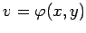
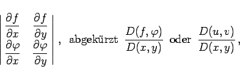
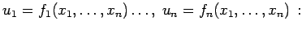
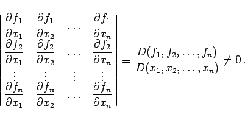
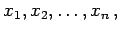
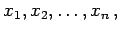
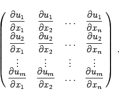

Inhalt Index DeskTop Bronstein

 Funktionen und ihre Darstellung Funktionen von mehreren Veränderlichen Verschiedene ebene Definitionsbereiche Abhängigkeit von Funktionen
Funktionen und ihre Darstellung Funktionen von mehreren Veränderlichen Verschiedene ebene Definitionsbereiche Abhängigkeit von Funktionen


Im Falle zweier Funktionen u=f(x,y) und  darf ihre Funktionaldeterminante
|  | (2.275a) |
in dem betrachteten Gebiet nicht identisch verschwinden. Analog gilt im Fall von n Funktionen mit n Veränderlichen 
|  | (2.275b) |
Wenn die Anzahl m der Funktionen  kleiner ist als die Anzahl n der Veränderlichen  dann sind diese Funktionen unabhängig, sofern wenigstens eine Unterdeterminante m-ter Ordnung der folgenden Matrix nicht verschwindet.
kleiner ist als die Anzahl n der Veränderlichen  dann sind diese Funktionen unabhängig, sofern wenigstens eine Unterdeterminante m-ter Ordnung der folgenden Matrix nicht verschwindet.
|  | (2.275c) |
Die Anzahl der unabhängigen Funktionen ist gleich dem Rang r dieser Matrix. Hierbei werden diejenigen Funktionen unabhängig sein, deren Ableitung als Elemente in der nicht identisch verschwindenden Unterdeterminante r-ter Ordnung stehen.
Wenn m > n ist, dann können von den gegebenen m Funktionen höchstens n unabhängig sein.